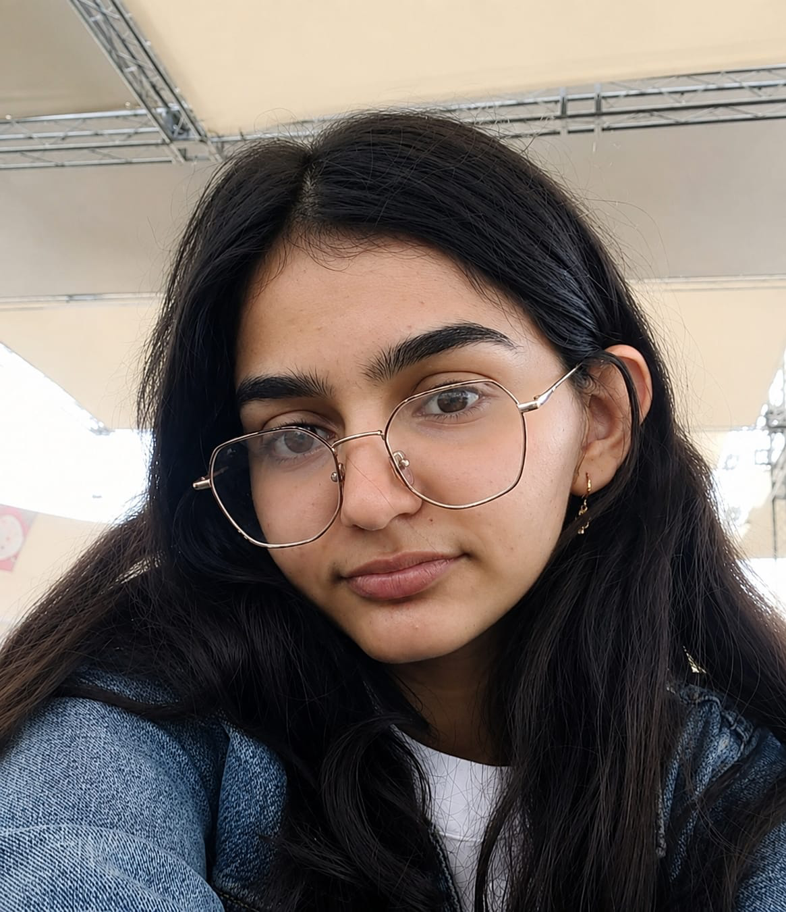

✺
COMMUNITY INITIATIVECOMMUNITY & SEVA
Sarab Noor
A community initiative supporting elderly seva, animal welfare, learning, hope and dignity.
I’m Mehar, a B.Sc. Artificial Intelligence and BCA student exploring the intersection of technology, creativity and community.

I’m developing a foundation in artificial intelligence, programming, databases and cloud technology.
My interests span Python, data tools and creative storytelling. Sketching and dance shape the way I think about ideas, while coding helps me explore how those ideas can become useful experiences.
Through Sarab Noor, I also contribute to community seva focused on care, hope and dignity. I bring this interest in people and practical problem-solving to my learning and projects.
Community work and developing ideas
across AI, fashion and technology.
A community initiative supporting elderly seva, animal welfare, learning, hope and dignity.
An AI project in development, reflecting my interest in thoughtful applications of technology.
A developing project exploring fashion, technology and visual storytelling.
Training and internship experience
in AI, databases and cloud services.
Ask Luke about my projects, skills, credentials or contact details.
For opportunities, collaborations
and conversations about my work.